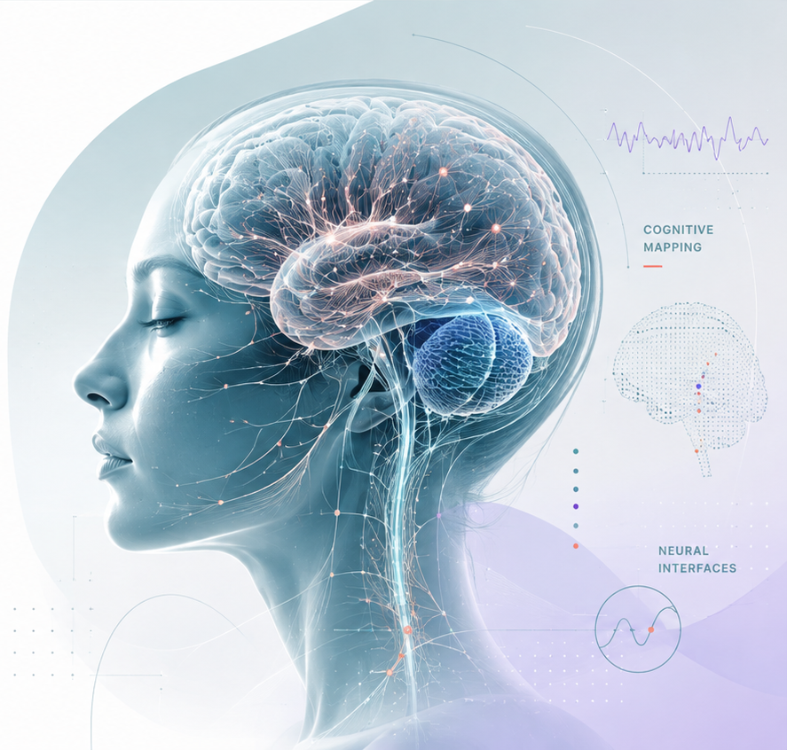

Clinical
Neuropsychological assessment, dementia and cognitive care.
Neuropsychology · Biomedical Engineering · Brain Health
I am a psychologist, neuropsychologist and Biomedical Engineering student working at the intersection of clinical practice, neuroscience, engineering and artificial intelligence.

01
About

I want to understand how technology can improve the way we measure, interpret and support brain health.
My work combines clinical neuropsychology with a growing technical foundation in biology, engineering, data and scientific computing.
My professional background is in cognitive assessment, dementia and neuropsychological care.
Clinical practice has taught me that cognition cannot be understood through test scores alone. A result becomes meaningful when it is connected to a person's history, environment and everyday functioning.
I am now expanding this experience through Biomedical Engineering, with particular interest in medical devices, physiological signals, neuroimaging and artificial intelligence.
I see engineering not as a departure from clinical work, but as a new language for approaching the same questions.
Explore my backgroundClinical
Neuropsychological assessment, dementia and cognitive care.
Technical
Biomedical Engineering, medical technology and biological signals.
Computational
Scientific computing, data visualisation and explainable AI.
Direction
Interdisciplinary research focused on better brain health.
02
Research
My research interests focus on how clinical insight, biological measurement and responsible technology can contribute to better understanding and supporting brain health.

How can cognitive assessment become more precise without losing the clinical meaning of a person's history, environment and everyday functioning?

How can medical devices and digital tools support prevention, assessment, monitoring and neurological care?

How can artificial intelligence support professional judgement while keeping uncertainty, limitations and clinical context visible?

How can biological and imaging data complement cognitive assessment and contribute to earlier detection of neurological change?
03
Projects
A growing collection of academic, technical and clinical projects connecting neuroscience, engineering, data and brain health.
Dememoria is the clinical foundation of my work in neuropsychology and cognitive health.
It brings together cognitive assessment, dementia care, cognitive intervention, emotional support and work with patients and families.
This clinical experience now also acts as a reference point for my work in technology: helping me ask whether new tools, data and digital systems remain meaningful for real people and real cognitive needs.
Explore Dememoria
Biomedical Engineering
A long-term collection documenting coursework, technical notes, engineering concepts and reflections connecting technology with neuroscience and brain health.
View project
Neuropsychology
An editorial project exploring how cognitive data, neuropsychological interpretation and everyday functioning can be integrated without exposing real patient information.
View project
Data and Brain Health
Small experiments using data analysis, visualisation and physiological signals to explore questions related to cognition and neurological health.
View project04
Writing
Writing is part of how I connect clinical experience, technical learning and research questions.
This archive will bring together essays, learning notes and reflections across neuropsychology, neuroscience, Biomedical Engineering and artificial intelligence.
Contact
I am open to conversations related to neuropsychology, neuroscience, Biomedical Engineering, medical technology and brain health research.
contact@carolinasanchezgirona.com